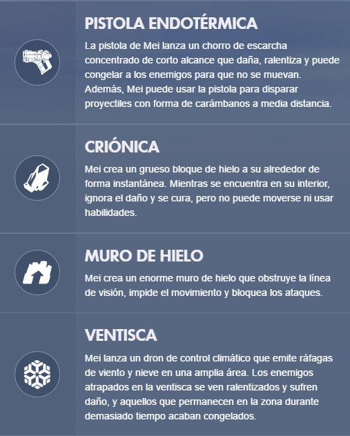

Los dispositivos de manipulación climática de Mei ralentizan a los oponentes y protegen ubicaciones. Su pistola endotérmica lanza carámbanos dañinos y ráfagas heladas. Además, Mei puede crionizarse para protegerse de ataques u obstruir los movimientos del equipo rival con muros de hielo.
